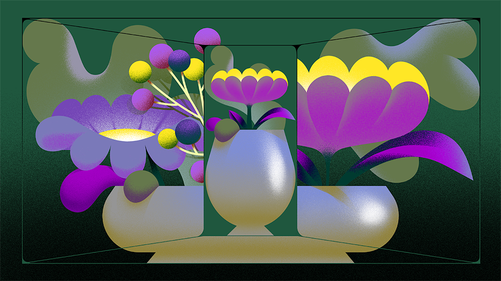
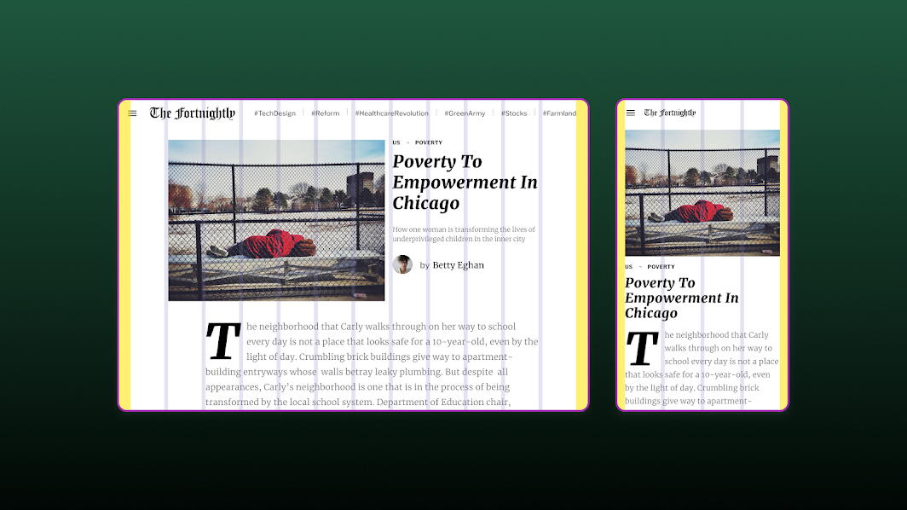
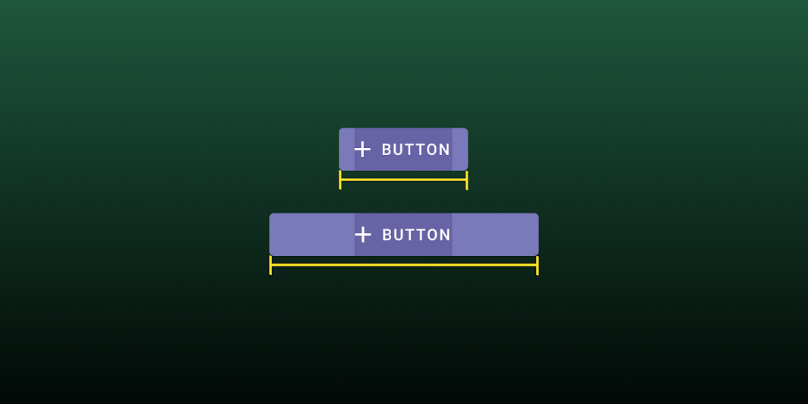

Introducing Material Design Guidance for Large Screens
Designing and building for more devices
Liam Spradlin, Material Design Advocate
post_twitterTweet
post_linkedinLink
post_facebookPost

Illustration by Simone Noronha
Material Design has always been built to be adaptable. With today’s updates, Material Design is expanding its adaptive capabilities to help prepare your apps for all form factors, from phones to tablets, desktops, and beyond. Updated guidance and component behaviors will help your app scale and adapt, while maintaining consistent layouts using components optimized for each device.
As a system capability, layout and component responsiveness are now baked into our Material guidelines. Our layout guidance, along with components and their design documentation, have all been updated to describe a method of creating interfaces that can adapt to changes in screen size and shape.

New layout guidance defines responsive grid composition and behavior
New layout guidance

Component updates define new scaling and adaptation behaviors for individual Material components.
Component Updates
Complementing updated layout guidance, components have been updated as well, providing more specific direction on how Material Design Components can be used in experiences that adapt across devices and screen sizes.
Resources
The Material Baseline Design Kit for Figma has also been updated, adding a series of sample layout grids as components.
To see layout grids that account for newly revised breakpoint, margin, and column behaviors, grab a template for your desired screen size from the Assets panel and toggle Show Layout Grids from the View menu in Figma. The Layout regions property can be toggled in the Design panel to reveal navigation regions and app bars.
Additionally, a bug affecting color mapping on the Material Theme page has been resolved, and we have more updates planned to make full use of Figma's capabilities.
Ready to become a pro at adapting to large screens and prepare your app to run on all types of devices? Stay tuned for our talk, 5 things you can do to prepare your app for large screens, and the accompanying blog post, going live during Google I/O 2021.
In the meantime, check out the resources linked below and reach out to us with questions any time with #AskMaterial @MaterialDesign on Twitter.